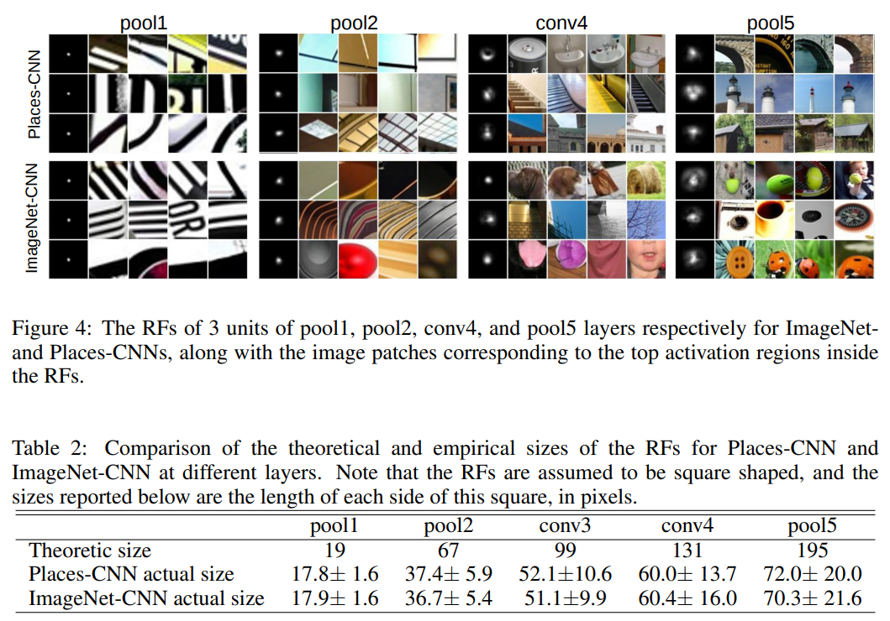

- Segmentation Overview
- Semantic Segmentation 기초와 이해
- FCN의 한계와 극복한 모델들 1
- FCN의 한계와 극복한 모델들 2
- High Performance를 자랑하는 UNet 계열의 모델들
- Semantic Segmentation 대회에서 사용하는 방법들
- Semantic Segmentation 연구 동향
Segmentation Overview
Segmentation History
Image Segmentation Using Deep Learning: A Survey
Image segmentation is a key topic in image processing and computer vision with applications such as scene understanding, medical image analysis, robotic perception, video surveillance, augmented reality, and image compression, among many others.
https://arxiv.org/abs/2001.05566
COCO(Common Objects in COntext)
COCO - Common Objects in Context
Introduction to the COCO Dataset - OpenCV
With applications such as object detection, segmentation, and captioning, the COCO dataset is widely understood by state-of-the-art neural networks.
https://opencv.org/introduction-to-the-coco-dataset/
dataset = {
“info”: {
“year”: 2021,
“version”: 1.2,
“description:” “Pets dataset”,
“contributor”: “Pets inc.”,
“url”: “http://sampledomain.org”,
“date_created”: “2021/07/19”
},
“licenses”: [{
“id”: 1,
“name”: “Free license”,
“url:” “http://sampledomain.org”
}],
“categories”: [
{“id”: 1,
“name”: ”poodle”,
“supercategory”: “dog”,
“isthing”: 1,
“color”: [1,0,0]},
{“id”: 2,
“name”: ”ragdoll”,
“supercategory”: “cat”,
“isthing”: 1,
“color”: [2,0,0]}
],
“image”: [
{
“id”: 934,
“width”: 640,
“height”: 640,
“file_name: “84.jpg”,
“license”: 1,
“date_captured”: “2021-07-19 17:49”
}
]
“annotations”: [
{
”segmentation”:
{
“counts”: [34, 55, 10, 71]
“size”: [240, 480]
},
“area”: 600.4,
“iscrowd”: 1,
“Image_id:” 122214,
“bbox”: [473.05, 395.45, 38.65, 28.92],
“category_id”: 15,
“id”: 934
},
{
”segmentation”: [[34, 55, 10, 71, 76, 23, 98, 43, 11, 8]],
“area”: 600.4,
“iscrowd”: 1,
“Image_id:” 122214,
“bbox”: [473.05, 395.45, 38.65, 28.92],
“category_id”: 15,
“id”: 934
}
]
}Semantic Segmentation 기초와 이해
Transposed Convolution
딥러닝에서 사용되는 여러 유형의 Convolution 소개
An Introduction to different Types of Convolutions in Deep Learning 을 번역한 글입니다.
https://zzsza.github.io/data/2018/02/23/introduction-convolution/
14.10. Transposed Convolution - Dive into Deep Learning 1.0.0-beta0 documentation
The CNN layers we have seen so far, such as convolutional layers () and pooling layers (), typically reduce (downsample) the spatial dimensions (height and width) of the input, or keep them unchanged.
https://d2l.ai/chapter_computer-vision/transposed-conv.html
What are deconvolutional layers?
I recently read Fully Convolutional Networks for Semantic Segmentation by Jonathan Long, Evan Shelhamer, Trevor Darrell.
https://datascience.stackexchange.com/questions/6107/what-are-deconvolutional-layers
2x2 Transposed Convolution (stride = 1)
2x2 Transposed Convolution (stride = 2)
피처맵의 공간 차원을 증가(Up Sampling)을 위해 사용하는 연산
Deconvolution이라는 용어와 혼용하지만, 사실 구분해야 한다
- 왜 ‘Transposed’라고 표현할까? 연산 방식과 깊은 관련이 있다
-
일반적인 Convolution
-
Transposed Convolution
-
FCN(Fully Convolutional networks for semantic segmentation)
Fully Convolutional Networks for Semantic Segmentation
Convolutional networks are powerful visual models that yield hierarchies of features.
https://arxiv.org/abs/1411.4038
-
기존의 VGG에서 FC Layer들을 1x1 Conv로 변경
-
마지막에 Transposed Convolution을 사용하여 Upacaling 수행, 입력 크기만큼 복원
FCN의 성능을 향상시키기 위한 방법
Skip Connection 사용
-
Max Pooling에 의해서 잃어버린 정보를 복원해주는 작업을 진행
-
Upsampled Size를 줄여주기에 좀 더 효율적인 이미지 복원 가능
-
Skip Connection을 사용해 Pooling 전 Feature와 합성후 다시 Upsacaling 수행
FCN-8s Network(https://www.researchgate.net/figure/Fully-convolutional-neural-network-architecture-FCN-8_fig1_327521314)
FCN의 한계와 극복한 모델들 1
FCN의 한계점
객체의 크기가 크거나 작은 경우 예측을 잘 하지 못하는 문제
-
큰 Object의 경우 지역적인 정보만으로 예측
- 버스의 앞 부분은 버스로 예측하지만, 버스 유리창에 미친 자전거를 보고 자전거로 인식하는 문제도 발생
- Convolution Layer의 Receptive Field의 문제로 볼 수 있음
-
작은 Object가 무시되는 경향 존재
Object의 디테일한 모습이 사라지는 문제
-
Upscaling 방식이 너무 간단해 경계를 학습하기 어려움
Decoder를 개선한 Model들
DeconvNet
Learning Deconvolution Network for Semantic Segmentation
We propose a novel semantic segmentation algorithm by learning a deconvolution network.
https://arxiv.org/abs/1505.04366
Conv Network는 VGG16 사용
-
13개의 층
-
ReLU와 Pooling이 Convolution 사이에서 이루어짐
-
7x7 Conv와 1x1 Conv 활용
Deconvolution Network
- Unpooling
- 디테일한 경계를 포착
- Pooling의 경우, 노이즈를 제거하지만 정보가 손실되는 문제가 존재
- Unpooling을 통해 Pooling 시 지워진 경계의 정보를 기록했다 복원
- 학습의 영역이 아니기 때문에 빠른 속도
- 그러나 Sparse한 Activation Map을 가짐
- Transposed Convolution이 이를 보완
- Deconvolution(Transposed Convolution)
- 전반적인 모습을 포착
- ReLU

깊은 계층에 대한 deconvolution일수록 디테일한 형상을 갖고 있음
기존 FCN에 비해 더 디테일한 Predict 가능
SegNet
SegNet: A Deep Convolutional Encoder-Decoder Architecture for Image Segmentation
We present a novel and practical deep fully convolutional neural network architecture for semantic pixel-wise segmentation termed SegNet.
https://arxiv.org/abs/1511.00561
Road Scene Understanding applications 분야에서 Semantic Segmentation을 수행하기 위해 개발
-
차량, 도로, 차선, 건물, 보도, 하늘, 사람 들의 Class를 빠르게 구분할 수 있어야 함
-
기존 DeconvNet의 경량화 버전
DeconvNet vs SegNet
| DeconvNet | SegNet |
| Encoder / Decoder Network가 대칭인 구조 | Encoder / Decoder Network가 대칭인 구조 |
| Encoder Network → VGG 16으로 Encoding → 13개의 층 → Conv / BN / ReLU / Pooling → FC Layer로 7x7 Conv 및 1x1 Conv | Encoder Network → VGG 16으로 Encoding → 13개의 층 → Conv / BN / ReLU / Pooling → 중간의 1x1 Conv 제거 |
| Decoder Network → Unpooling + Deconvolution + ReLU | Decoder Network → Unpooling + Convolution + ReLU |
Skip Connection을 적용한 Model들
FC DenseNet
Densely Connected Convolutional Networks
Recent work has shown that convolutional networks can be substantially deeper, more accurate, and efficient to train if they contain shorter connections between layers close to the input and those close to the output.
https://arxiv.org/abs/1608.06993
이전 Layer의 정보를 Concatenation해서 다음 Layer로 전달
Unet
U-Net: Convolutional Networks for Biomedical Image Segmentation
There is large consent that successful training of deep networks requires many thousand annotated training samples.
https://arxiv.org/abs/1505.04597
Encoder의 정보를 Skip connection을 통해 decoder로 전달, Concatenation 후 다음 Decoder Layer로 전달
Receptive Field를 확장시킨 Model들
DeepLab v1
Semantic Image Segmentation with Deep Convolutional Nets and Fully Connected CRFs
Deep Convolutional Neural Networks (DCNNs) have recently shown state of the art performance in high level vision tasks, such as image classification and object detection.
https://arxiv.org/abs/1412.7062
Receptive Field : 뉴런이 바라보고 있는 입력 영역의 크기
-
Receptive Field가 클 수록 전체적인 정보를 통해 추론하므로, 더 잘 검출할 수 있을 것이라고 기대 할 수 있음
-
Conv → Maxpooling → Conv → …
-
메모리 저감
-
노이즈 저감
-
효율적인 Receptive Field 확장
-
하지만 Segmantation에서는 Low Feature resolution을 가지는 문제 발생
-
Dilated Convolution을 사용, Receptive Field 확장
- Dilated Convolution[link]
Dense CRF를 사용해 Predict Image Upscaling
Dense CRF
-
이미지 분할 문제를 해결하기 위해 사용되는 확률 그래픽 모델의 일종
-
CRF를 사용하면 이미지의 색상과 텍스처 등의 특징을 기반으로 이미지의 각 픽셀을 특정 클래스에 할당
-
CRF 모델은 픽셀 간의 관계를 고려하여 이미지의 더 정확한 분할이 가능
-
이미지의 먼 부분 간의 관계를 잡아내기 어려운 전통적인 CRF 모델의 개선 버전으로 제안
-
이미지 내의 모든 픽셀 간의 관계를 모델링하기 위해 완전히 연결된 그래프를 사용
-
이웃 픽셀만 모델링, 픽셀 간의 관계를 더 자세하게 분석할 수 있게 해 세분화 결과의 정확도를 향상
DilatedNet
Multi-Scale Context Aggregation by Dilated Convolutions
State-of-the-art models for semantic segmentation are based on adaptations of convolutional networks that had originally been designed for image classification.
https://arxiv.org/abs/1511.07122
Deeplab v1의 개량형 모델
FCN의 한계와 극복한 모델들 2
Receptive Field를 확장시킨 Model들
DeepLab v2
DeepLab: Semantic Image Segmentation with Deep Convolutional Nets, Atrous Convolution, and Fully Connected CRFs
In this work we address the task of semantic image segmentation with Deep Learning and make three main contributions that are experimentally shown to have substantial practical merit.
https://arxiv.org/abs/1606.00915
DilatedNet, DeepLab v1 모두 Dilated Convolution을 사용해 Receptive Field를 키웠음
DeepLab v1의 단점
-
모든 풀링 계층에 대해 단일 속도만 사용하여 Receptive Field의 크기가 제한됨
-
Up Sampling은 간단히 특징 맵을 반복하여 단순하게 수행됨
본 문제들을 해결하기 위해, DeepLab v2는 multi-scale dilated convolution을 사용하는 것을 제안
- 하나의 비율 대신, DeepLab v2는 각 레이어마다 비율이 증가하는 multiple rates를 사용
- 더 큰 Receptive Field를 갖게 하여 더 나은 segmentation 성능 달성 가능
- 단순한 Up Sampling 대신 Up Sampling에 bilinear interpolation을 사용
PSPNet
Pyramid Scene Parsing Network
Scene parsing is challenging for unrestricted open vocabulary and diverse scenes.
https://arxiv.org/abs/1612.01105
Object Detectors Emerge in Deep Scene CNNs
With the success of new computational architectures for visual processing, such as convolutional neural networks (CNN) and access to image databases with millions of labeled examples (e.
https://arxiv.org/abs/1412.6856
도입 배경
- Msimatched relationship
- 객체들간의 특징을 catch하지 못함
- ex : 호수 주변에 boat가 있는데, 기존 모델(FCN)은 Car로 예측
- idea : 주변의 특징을 고려
- Confusion Categories
- Inconspicuous Classes
-
작아서 예측을 하지 못함
-
ex : 배개와 이불이 같은 무늬일 때, 기존 모델(FCN)은 배개를 이불로 예측
-
idea : 작은 객체들도 global contextual information 사용
-
Receptive Filed가 큰데, 왜 이런 문제가 발생할까?
- OBJECT DETECTORS EMERGE IN DEEP SCENE CNNS의 저자는 이론적인 Receptive Field의 크기와 실제 Receptive Field의 크기가 다르다고 주장
- 실험결과, Pooling이 진행될수록 오차가 커짐

PSP Net의 Idea
-
Global Average Pooling을 사용
Gloabl Average Pooling
-
다양한 양의 비율의 풀링을 연결하여 발생된 각 Feature Map을 객체 간의 상관관계를 잡아낼 수 있게 함
-
따라서 객체간의 관계를 잡아낼 수 있게되고, 또한 작은 객체들도 고려할 수 있게 됨
-
이를 통해 이미지 픽셀 분할을 모델링하기 위해 완전히 연결된 그래프를 사용하는 CRF 모델의 단점을 극복할 수 있게 됨
DeepLab v3
Rethinking Atrous Convolution for Semantic Image Segmentation
In this work, we revisit atrous convolution, a powerful tool to explicitly adjust filter’s field-of-view as well as control the resolution of feature responses computed by Deep Convolutional Neural Networks, in the application of semantic image segmentation.
https://arxiv.org/abs/1706.05587
- DeepLabV2 모델의 개선 버전
- 기존 DeepLab v2 버전에서 Atrous Spatial Pyramid pooling을 수정, Global Average Pooling이 추가
- 확장된 Receptive Field를 사용하고 이미지 분할의 정확도를 향상시키기 위해 Dilated Convolution을 사용
- Encoder-Decoder 구조
- Atrous Convolutional Neural Network (CNN)을 사용해 결과물의 해상도를 높임
- Multi-Scale Feature Learning과 간단하면서도 효과적인 Decoder Module을 소개
- Fully Connected Conditional Random Field (CRF)을 사용하여 분할 결과를 더욱 개선
DeepLab v3+
Encoder-Decoder with Atrous Separable Convolution for Semantic Image Segmentation
Spatial pyramid pooling module or encode-decoder structure are used in deep neural networks for semantic segmentation task.
https://arxiv.org/abs/1802.02611
- Encoder에서 Spatial diemsion의 축소로 인해 손실된 정모를 Decoder에서 점진적으로 복원
- Encoder
-
수정된 Xception을 backbone으로 사용
-
Atrous separable convolution을 적용한 ASPP 사용
-
Backbone 내 low-level feature와 ASPP 모듈 출력을 모두 decoder에 전달
-
- Decoder
- ASPP 모듈의 출력을 Up Sampling(bilinear)해서 Low-level feature와 결합
- 결합된 정보는 Conv 연산 후 Up Sampling되어 최종 결과 도출
- 기존의 단순한 Up Sampling 연산을 개선시켜 detail을 유지하도록 함
High Performance를 자랑하는 UNet 계열의 모델들
UNet
U-Net: Convolutional Networks for Biomedical Image Segmentation
There is large consent that successful training of deep networks requires many thousand annotated training samples.
https://arxiv.org/abs/1505.04597
UNet 개요
의료계열은 데이터를 확보하기 어려움
기본적인 DL 모델들은 파라미터 수가 많고 네트워크가 깊어 많은 data 필요
Cell segmentation의 경우, 같은 클래스가 인점해 있는 셀 사이의 경계 구분 필요
UNet Architecture
Data Augmentation
Random Elastic deformation을 통해 augmentation 수행
한계점
기본적으로 깊이가 4로 고정되어 있음
- 데이터셋마다 최고의 성능을 보장하지 못함
- 최적깊이 탐색비용 상승
단순한 Skip Connection
- 동일 깊이를 가지는 Encoder와 Decoder만 연결되는 제한적인 구조
UNet++
UNet++: A Nested U-Net Architecture for Medical Image Segmentation
In this paper, we present UNet++, a new, more powerful architecture for medical image segmentation.
https://arxiv.org/abs/1807.10165
UNet++ 개요
UNet의 한계점을 극복하기 위해 새로운 아키텍처 제시
- Encoder를 공유하는 다양한 깊이의 UNet 생성
- 동일한 깊이에서의 Feature Map들이 모두 결합되도록 Skip Connection 수행
- Ensemble 효과
- Deep Supervision Loss 사용
- X^(0,1) & X^(0,2) & X^(0,3) & X^(0,4)에 대하여 각각 Loss 계산
- 최종 Loss는 위 4개의 Loss의 평균
한계점
- 복잡한 Connection으로 인한 Parameter 증가
- 많은 Connection으로 인한 메모리 증가
- Encoder-Decoder 사이에서의 Connection이 동일한 크기를 갖는 Feature map에서만 진행됨
- Full scale에서 충춘한 정보를 탐색하지 못해 위치와 경계를 명시적으로 학습하지 못함
UNet3+
UNet 3+: A Full-Scale Connected UNet for Medical Image Segmentation
Recently, a growing interest has been seen in deep learning-based semantic segmentation.
https://arxiv.org/abs/2004.08790
UNet, UNet++의 한계점
- UNet
- Decoder를 구성하는 방법이 같은 level의 encoder layer로 부터 feature map을 받는 simple skip connection을 사용
- UNet++
- Nested and dense skip connection을 사용해서 encoder-decoder 사이의 semantic gap을 줄임
- 파라미터 증가, 메모리 증가, full scale에서의 충분한 정보 탐색을 잘 못함(예측위치와 경계를 명시적으로 잘 학습하지 못함)
- Nested and dense skip connection을 사용해서 encoder-decoder 사이의 semantic gap을 줄임
UNet3+에 적용된 Techniques
Full-Scale Connections : [Conventional + Inter + Intra] skip connection
- Decoder Feature Map
- (Conventional)encoder layer로부터 same-scale의 feature maps를 받음
- (Inter)encoder layer로부터 smaller-scale의 low-level feature maps를 받음
- 풍부한 공간 정보를 통해 경계 강조
- (Intra)decoder layer로부터 lager-scale의 high-level feature maps를 받음
-
어디 위치하는지의 위치 정보 구현
-
Classification-guided Module(CGM)
- low-level layer에 남아있는 background의 noise로 인해 많은 False-Positive 문제 발생
- 정확도를 높이고자 exrtra classfication task 즌행
- high-level feature maps인 를 활용
-
Dropout, 1x1 Conv, Adaptive max pool, sigmoid 통과
-
argmax를 통해 organ이 없으면 0, 있으면 1로 출력
-
위에서 얻은 결과의 각 low-layer마다 나온 결과를 곱
-
Full-scale Deep Supervision
- 경계부분을 잘 학습하기 위해서 Loss 여러가지 결합
- Focal Loss : class 불균형 해소
- ms-ssim Loss : Boundary 인식 강화
- iou : 픽셀의 분류 정확도 상승
Another Version of the UNet
-
Residual-UNet
Road Extraction by Deep Residual U-Net
Road extraction from aerial images has been a hot research topic in the field of remote sensing image analysis.
https://arxiv.org/abs/1711.10684- Encoder 및 Decoder 부분의 Block마다 residual unit with identity mapping 적용
-
Mobile-UNet
-
MobileNet 을 backbone으로 사용
Info
-
-
Eff-UNet
-
EfficientNet을 backbone으로 사용
Info
-
Semantic Segmentation 대회에서 사용하는 방법들
EfficientUNet Baseline
Model 불러오기
Segmentation Models[link]
- High Level API
- Architectures
- UNet, UNet++, Manet, Linknet, FPN, PSPNet, PAN, DeepLabV3, DeepLabV3+
- Encoders
- ResNet, ResNeXt, ResNeSt, Res2Ne(X)t, RegNet(x,y) SE-Ne(X)t, DenseNet, Inception, EfficientNet, MobileNet, VGG
Latest version from source:
$ pip install git+https://github.com/qubvel/segmentation_models.pytorch
Baseline 이후에 실험해봐야할 사항들
Augmentation
Cutout : 이미지를 일부 가려서 일반화 성능의 향상 → Object와 상관 없는 영역을 가릴 수 있음
GridDropout : 전체적인 Grid를 가림
Cutmix : object 일부를 다른 object 이미지로 대치
Snapmix : CAM을 이용해 이미지 및 라벨을 Mixing하는 방법
CropNonEmptyMaskIfExist : Object가 존재하는 부분을 중심으로 Crop 할 수 있다면 model의 학습을 효율적으로 할 수 있음
SOTA Model
HRNet
Deep High-Resolution Representation Learning for Visual Recognition
High-resolution representations are essential for position-sensitive vision problems, such as human pose estimation, semantic segmentation, and object detection.
https://arxiv.org/abs/1908.07919
Scheduler
- CosineAnnealingLR
- LR의 최대-최소 값을 정해, 그 범위의 학습율을 Cosine 함수를 이용해 스케줄링 하는 방법
- Saddle Point를 빠르게 벗어나게 함
- ReduceLROnPlateau
- Metric의 성능이 향상되지 않을 때 LR을 조절
- Local Minima에 빠졌을 때, LR를 조절하여 효과적으로 빠져나옴
- Gradual Warmup
- 학습 시작 시 매우 작은 LR로 시작해서 특정 값에 도달할 때 까지 LR을 서서히 증가시키는 방법
- 이 방식을 사용하면 Weight가 불한정한 초반에도 비교적 안정적으로 학습 수행 가능
- Backbone 네트워크 사용 시, Weight가 망가지는 것을 방지
Optimizer / Loss
AdamP: Slowing Down the Slowdown for Momentum Optimizers on Scale-invariant Weights
Normalization techniques are a boon for modern deep learning.
https://arxiv.org/abs/2006.08217
- Adam
- AdamW
- AdamP
- Radam
- Lookahead Optimizer
-
Adam이나 SGD를 사용해 K번 업데이트 후, 처음 시작했던 point 방향으로 1 step back 후, 그 지점에서 다시 시작하는 방법
-
Adam이나 SGD로 빠져나오기 힘든 Local Minima를 빠져나올 수 있음
-
Ensemble
- 5 Fold Ensemble
- Epoch Ensemble
- SWA(Stochastic Weight Averaging)
- Seed Ensemble
- Resize Ensemble
- TTA(Test time Augmentation) Ensemble
- TTA Library : ttach
Pseudo Labeling
label이 없는 데이터에 대해서 labeling 후, confidence가 높은 데이터를 학습에 참여시키는 방법
그 외
학습 이미지가 많고 큰 경우에는 네트워크를 한 번 학습하는 데 시간이 오래 걸림, 충분한 실험이 어려움
-
AMP
-
가벼운 상황으로 실험
-
Params가 적은 모델로 실험, 최종은 성능이 잘 나오는 모델로 실험
Sliding Window를 사용
Label Smoothing
- Hard target → Soft target
- CrossEntropyLoss / BCE Loss → SoftCrossEntropyLoss / SoftBCELoss
Semantic Segmentation 연구 동향
HRNet
Deep High-Resolution Representation Learning for Visual Recognition
High-resolution representations are essential for position-sensitive vision problems, such as human pose estimation, semantic segmentation, and object detection.
https://arxiv.org/abs/1908.07919
Image Classification 모델이 해상도를 줄여나가는 이유
- 특정 물체 분류시 많은 경우, 이미지 내 모든 특징점이 필요하지 않음
- 해상도가 줄어들어 효율적인 연산이 가능, 넓은 Receptive Field를 갖게 됨
- 주요 특징만을 추출하여 과적합 방지
이미지 분류 모델을 사용하여 얻은 저해상도 특징은 모든 픽셀에 대해 정확한 분류를 수행하기에는 부족한 정보를 가짐
따라서 segmantation 모델들은 해상도를 적게줄이면서 receptive field를 키울 필요가 있음
HRNet의 구성 요소
저해상도 → 고해상도 복원이 아닌, 고해상도 정보를 계속 유지
-
입력 이미지의 해상도를 strided convolution Article 을 이용해 해상도를 1/4로 줄임
-
전체 구조에서 해당 해상도 유지
-
중간중간 분기하여 고해상도부터 저해상도까지 다양한 해상도의 feature를 계산
-
중간중간 서로의 feature를 서로에게 전달
high → low에서 strided conv를 사용한 이유 : 정보 손실 최소화
low → high에서 bilinear upsampling 사용한 이유 : time complexity
WSSS
Segmentation Labeling은 시간이 오래 걸림
Weak Supervision
-
Test시 요구하는 output보다 학습 시에 더 간단한 annotation을 이용하여 학습
-
image level label을 활용하기 위해 Classification Model 학습
-
학습한 Classification model을 통해 CAM, Grad-CAM 혹은 attention 추출, label로 사용
CAM & Grad-CAM 문제점
-
pseudo-mask의 결과가 좋지 않음
-
CAM의 문제점
- 마지막 레이어는 꼭 GAP를 가져야 함
- 마지막 레이어에서만 CAM을 만들 수 있음
-
결과가 Sharp하지 않음
Sharp하게 만들기 위한 접근
- CRF를 사용
- Object-ness(saliency)를 학습한 모델을 전이학습
- Self-supervised Learning 이용
-
동일 Image를 input size와 관계 없이 CAM 모양이 같아지도록 L1 Loss 사용
-
CAM Output의 특징
-
분류 시, 다른 Class임을 확실하게 알 수 있도록 특징적인 부분에 집중(타조의 몸통보다 얼굴에 집중)
-
같은 Class여도 서로 다른 모습을 보이므로 공통적으로 보이는 특징에 의존
CAM 영역 확장을 위한 접근
- CAM 영역을 지워가며 반복 학습
- 입력 이미지를 Classification Network1를 사용해 CAM 추출
- Classification Network1에서 만들 결과 영역 제거
- 제거한 이미지로 Classification Network2 학습
- 동일하게 Classification Network3 학습
- 합치면, object 영역을 얻을 수 있음
- Output별로 다른 모델을 학습해야 하는 번거로움 존재
- 반복하다 보면 object 영역이 아닌 부분에 집중해버리는 Over-erasing 현상 존재
- 입력 이미지에서 random하게 patch를 지워 최대한 다양한 영역에서 feature를 추출해야 하도록 강제
- CAM 영역이 확장됨
- Over-erasing 해결됨
- CAM 영역을 지워가며 반복학습 하는 것을 네트워크 하나로 수행
- Adversarial Complementary Learning for Weakly supervised Object localization, cvpr 2018
- 다양한 receptive field 사용
- Revisiting Dilated Convolution: A Simple Approch for weakly-and semi-supervised semantic segmentation, cvpr 2018
- Mixup